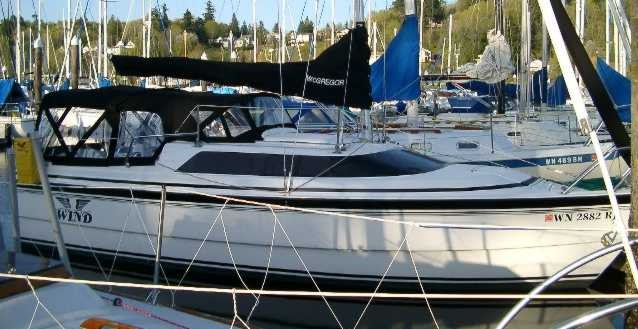
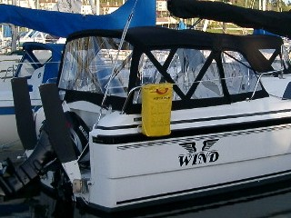
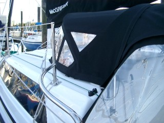
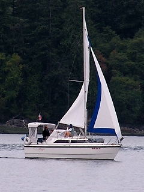
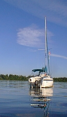

| Main | CB | FB | Fast | Size | Keel | Ballast | Point | Tall | Race | Lean | Ocean |
|
|
|
In my cruiser, it takes a lot
of
wind (17 MPH +) to observe crabbing when close hauled. When close the
freeboard
presented to the wind is minimal. That plus the fact that Mac26x cruisers
have
about the same amount of freeboard as a Catalina 30 has me convinced that
the
freeboard in my vessel does not slow her down. Murrelet got her name from
the
marbled Murrelet a small sea bird that rides high when in the water. You
do notice the high freeboard in Mac26x cruisers. To search this site enter a word or phrase below:
|
It is a waste of time to try to update a duck. A duck is naturally beautiful with simple lines. If you (modify it) then you will only have proven to the world that you were blind to its simple beauty in the first place.
Ference Mate
Best Boats To Build Or Buy
pg 78 One For The Eyes BCC
Low freeboard made sense during the age of marine hunting when it facilitated the work necessary to process the catch or to row. But with low freeboard a modest amount of heel will put the rail under the water. This slows the vessel down considerably and in the extreme can sink the vessel. It is a safety issue.
Low freeboard sailiing vessels are considered appropriate for inland protected waters. These vessels are fine for pleasure use. Pleasure boats - by definition - are toys, and they are not expected to be operated outside of the bath tub environment of a small lake or bay. I do not consider Mac26x boats toys. They are recreational vessels designed specifically for ocean use with appropriate freeboard for that purpose. In addition, and unlike some sailboats sold for ocean use that have low freeboard when at rest, the freeboard on a Mac26x does not vary much when on heel under sail.
|
 |
A few years after purchasing Murrelet, a group including my sister and her husband and my wife and I chartered a couple of 40 foot monohulls for a few weeks of racing and cruising in the British Virgin Islands. The Florida based Beneteau 402 center cockpit sloops were built in South Carolina specifically for the hot climate prevalent to their cruising grounds. In my opinion, the freeboard was determined by the layout of the interior of the vessels with the notion that head room would contribute to ventilation. We discovered in sort order that the vessels were human steam oven's nonetheless. Unfortunately the center cockpit was two small for laying down (as is the Ms), so we made due below decks as best we could. The notion that cruising vessels have higher freeboard because of the need for ventilation did not hold up to our observations. It is not possible to have enough freeboard in a cruising sail boat to generate the head room needed for ventilation in the humid tropics, unless perhaps if the deck is made of porous wood. And of course excessive freeboard can be a problem.
For a sailboat, low freeboard on the lee side can cause flooding. But the high freeboard on the windward side can also be used like a lever by the wind to flip the vessel over (an obvious stability concern for a multihull). In a moderate or strong wind, a cabin cruiser can be very difficult to maneuver owing to the amount of wind that hits its hull. In 2003 Murrelet was Shilshole shuffeled to a slip providing a grand view of this issue.
The Shilshole shuffel is the term applied at the Shilshole Marina to describe frequent but often temporary changes in slip assignments owing to the difficulty of managing sub leases. If I were running things sub leases would not be allowed but in anycase I so enjoy watching large underpowered cabin cruisers and even sailboats pull up for fuel and depart when the wind is blowing, that my shuffel was made permanent.
The desirability of a real engine, rather than a sailboat kicker on a cruiser with freeboard worthy of ocean craft was obvious from Murrelet's 2003 summer-post-shuffel perch. Owing to what happens in windy conditions, you do not want a cockpit enclosure rigged on a vessel that is under powered. I will not soon forget the large cabin cruiser that had to exit Shilshole about the down wind breakwater, the captain complaining that the fully enclosed vessel just would not turn upwind in the amount of harbor available. The following X cruiser has been fitted out with a full cockpit enclosure.
 |
 |
 |

|

Other Mac26x cruisers sport enclosures with standing head room that restricts mainsail use. The Wind's enclosure included zippers in the dodger viewport that allowed opening for visibility. Hence crew could stand under the dodger and operate with an autopilot remote or the captain could operate while sitting down at the wheel with crew spotting. Zippers opening from the centerline allow the mainsheet to extend through the enclosure so that the mainsail can be deployed. A viewport in the enclosure top for checking mainsail trim and the wind indicator would be ideal. For sail handling during a race you would of course remove all the enclosure parts (including rain dodger). When weighted down for an extended cruise, and given the 50 hp engine, I forsee little problem in the configuration. Murrelet should be just as fast and manuverable with the enclosure as without assuming proper weight distribution.Weight distribution is important to the speed a vessel can achieve. For the fastest speed while motoring, weight should be low and to the centerline. Think like a motorcycle rider or an ice skater to see this. It is easily observed on a speedboat by having crew sit at different positions during runs at wide open throttle (WOT) and noting speed by GPS.
 The
notion that low freeboard sailboats are faster than similar sized
higher freeboard competitors is supported by this weight distribution
observation. Crew with no place to be except low in the boat
allows greater speed.
The
notion that low freeboard sailboats are faster than similar sized
higher freeboard competitors is supported by this weight distribution
observation. Crew with no place to be except low in the boat
allows greater speed.
However monohull sailboats heel where a speed boat will not, and unless the sailboat has the overall shape of a log, the heel creates more freeboard on the windward side, and less on the lee. The distance from the water to the rail is defined as freeboard. Analysis of the MacGregor Classic, M, and X illustrates.
Start with a Mac26 Classic and its low freeboard. Crew will stand or sit lower on deck than they could ever position themselves outside of the cruiser on a Mac26M.
 |
That condition is not necessarily bad. In fact in light wind it is beneficial. On a sailboat with a Classic or M style hull, that is light enough for crew weight to make a difference, crew will move forward to a point where the vessel will lean and, if the leaning is to the lee, sails will gain shape by the force of gravity alone. In very light wind - often what appears to be no wind - the light displacement sailboat with gravity filled sails requires just a small puff of wind to start moving forward. Only a small puff is needed because none of the energy in that wind is needed to lift the sails.
 |
 |
The X cruiser, because she is not restricted to ballast only operation, can also drop 1,400 lbs of weight, this reducing what is called dynamic stability and making the boat more responsive. In effect the draining of water ballast moves weight from off the centerline of the motoring cruiser, this contributing to speed as discussed above. The mechanics are not unlike the spinning figure skater who brings her arms to her chest to increase the speed of her spinning. The water ballast so drained out also provides extra flotation which can be used to carry provisions for extended cruising, provided those provisions are stored and secured properly.
The limit of positive stability LPS for the X cruiser has been engineered by computer design to be 115. Most modern production boats will have LPS angles of between 100 and 140. At 90 LPS angle it isn't possible to get water into the X cabin and this feature is heavily advertised on promotional videos with the 115 LPS being quoted by Roger MacGregor in reviews of the vessel. But the X is even more stable a sail boat than the LPS would imply.
Owners who have laid the cruiser down on her side report that the X will not turn turtle if her sails are up. With the cabin hatches closed, the amount of freeboard and coachroof rise improves the LPS likely beyond the hull engineering of 115. In any case, an inverted X will have very poor inverted stability which is what you want in an ocean sail boat.
What this means should an X ever turn turtle (none have been reported doing so) is that only a small amount of wave energy or crew rocking should right the vessel assuming the vessel hasn't taken on much water and the gear and water ballast are loaded properly, or the vessel is empty. MacGregor Yachts literally has turned boat stability calculations inside out when you recognize that the combination of water ballast tank and hull side chines equates to a trimaran. The benefits of a Trimaran, often stated as performance and comfort, are gained in the X hull without the disadvantage trimarans have, that being that once inverted that are not likely to be rightable. This is discussed more under the ocean myth 11 discussion where ratios are presented. The point is that good freeboard in combination with other factors makes for a very ocean worthy vessel.

Mac26x vessels ride high but not excessively, not without grace, with inherent beauty by my eye, and unlike many sailboats the freeboard doesn't vary much when heeled. The most important disadvantage of high freeboard on a recreational vessel involves retrieving a MOB (man overboard). Many ocean sailboats carry life slings which are a tool used for hoisting MOBs. Modern designs (like the X boat) have low freeboard at the stern that make unnecessary life slings. The M if mounted with a 50 hp motor does not have this feature. The Mac26m has a contemporary rather than modern design more suited for a small sailboat kicker engine. A 50 HP motor blocks entry from the stern, and hence Ms should carry a life sling when fitted out with 50 hp or any large size engine.In addition to stability, there are a couple of other benefits to high freeboard. First, at anchor, a certain amount of windage is a good thing. Some sailboats and even power vessels prone to sailing or skating at the anchor will put up a small sail at the stern to lay the boat quitely to the wind. Keeping the boat as still as possible at anchor is a good thing because it minimizes the possibility of anchor drag, rode chaffing, or smacking another boat. The Mac26x cockpit enclosure, partially or fully deployed in concert with a dampening weight, such as second anchor hanging straight down from the bow, keeps Murrelet from skating even with the foils retracted. A similar effect is gained by tying off a lunch hook to the stern rather than to the bow and forgoing the dampening weight. Windage explains both anchoring observations. Second, I am able to sail Murrelet bare polled using the hull as a sail. This is with maneuverability. The following table is related to the above discusion:
| MPH - Beaufort | Knots | Sail Plan for Murrelet (not necessarily appropriate for other X vessels.) |
| 0-4 - 1 | 1-3 | Full main sail, and
Genoa. Patches of ripples. |
| 4-7 - 2 | 4-6 | Full main sail, and Genoa,
consider water ballast, less Genoa Overall ripples. |
| 8-12 - 3 | 7-10 | Full main sail, and Genoa, and
water ballast Small waves. |
| 13-18 - 4 | 11-13 14-16 |
Intermediate reef main and full
Genoa - planing mode Intermediate reef main sail & 110% - 120% of Genoa longer flatter waves. |
| 18-24 - 5 | 17-21 | Reefed main sail & 80% - 90%
of Genoa Few whitecaps. |
| 25-31 - 6 | 22-27 | No main & Genoa rolled out more than jib
size overall whitecaps. |
| 32-38 - 7 | 28-33 | Lower end, Genoa only in
storm jib size Sail the hull, consider motor sailing, go with the flow. Small Craft Advisory, you will see sailboats but very few cabin cruisers. |
| 47-54 - 8 | 41-47 | Should have motored to harbor.
These are fast sailboats capable of reaching harbor by sail or motor before such a blow.Remove enclosures. consider dropping mast. Close hatches. Sail hull. Gale Warning. You will see few boats. Wait it out. Write book. |
The next myth is partially related because fast sailboats often have narrow bows to make crew leaning forward capable of filling sails by gravety. This becomes a stability issue when motoring at WOT unless buoyancy is provide by a powerboat belly as in the X. Click on the next tab for further discussion.
|
|
|
|
|
Frank & Lisa Mighetto - 1260 NE 69th St. Seattle, WA 98115 - (206) 525-1458 voice and fax
mighetto@eskimo.com - Internet email address
mighetto@compuserve.com - Internet email address or 72154,3467 from within Compuserve
 High freeboard
improves buoyancy with no decrease in hull speed. This second myth
probably is
supported by the beauty of sailboats with low freeboard. They certainly do
look
faster than many of their high freeboard counterparts. It is also
supported by
the notion that high freeboard causes excessive lateral drift (crabbing)
which
results in more tacks during an upwind race.
High freeboard
improves buoyancy with no decrease in hull speed. This second myth
probably is
supported by the beauty of sailboats with low freeboard. They certainly do
look
faster than many of their high freeboard counterparts. It is also
supported by
the notion that high freeboard causes excessive lateral drift (crabbing)
which
results in more tacks during an upwind race.